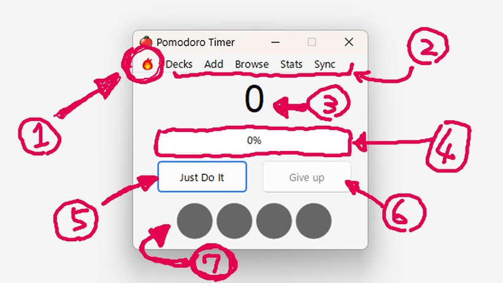
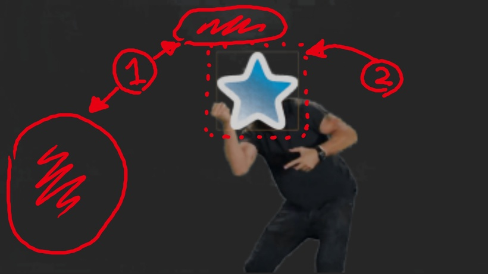
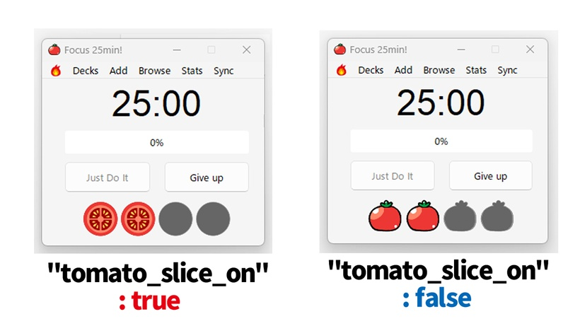

🍅Just do it Anki Timer
(How to use)Just Do Anki Timer - Beta, Pomodoro timer, tomato count, Just do it sound and animation, 13.4 MB
---! Attention ! & Introduction---
This add-on is still in development and not yet complete, so it is not published on Anki Web. If you become a Patreon, you will get early access to beta versions that are in development. (Operation is not guaranteed)
Download from this download page.
(My patreon add-ons will be released for free in the future. I will develop add-ons exclusively for Patreon first, and then release the free version. If you want it for free, please follow me and wait.)
I think it should probably work on Mac, Linux, Anki 2.1.43?~Anki 2.1.61, and Qt6 & Qt5. But I haven't checked others yet. It works on my PC Windows, Anki 2.1.61, Qt6.
(Anki add-ons only work on PC. It does not work on smartphones Anki Mobile or AnkiDroid.)
Just Do Anki Timer - [Beta Anki addon]
=== Description ===
Timer to automatically do Pomodoro in Anki.
Tomato streak, progress bar to keep you motivated, and regular short breaks to prevent burnout from over-learning.
If you get tired, press the fire icon to encourage JUST DO IT!
=== Pomodoro Timer window ===

- Fire icon : Play Just do it sound & Animation
- Mini Anki button :Decks, Add, browse, stats, Sync
- Timer count : 25min,15min, 5min (Count up)
- Progress bar : 0% ~ 100 %
- Just Do it button : Start timer (Pomodoro 25min~)
- Give up button : End timer (Reset all counts)
- Tomato streak slot : 25min × 4,
=== Pomodoro cycle ===

One Pomodoro is 25 minutes. Next, take a 5 -minute break. After 4pomodoro, take a 15 minute break and then reset.
There is no pause function. Pomodoro rules ・ One Pomodoro cannot be interrupted. If you interrupt it, it will fail. If you have time, do another work.
=== Animation Issue (still debugging) ===

- Noise : Dirt in the image has not been removed.
- Yellow border : Yellow border not removed.
- The resolution of the image is low.
- It is uncomfortable because the animation and the sound do not match.
- It may be better to use the Anki desktop icon version, not a blue star.
=== Option ===
---- !! warning !! ----
Optional features are still under development. Changing values that are not modifiable may cause bugs.
=== Can change ===

These settings cannot be changed without ending the timer (Give up button).
- ["tomato_slice_on": true] You can change the design of the tomato to slice or circle. true/false
- ["start_up" : true,] Set to true to automatically start the timer when Anki starts. Default is true.
- ["just_do_it_scale" : 3 ] animation scale. Default is x3.
- ["pomo_timer_interval" : 1000,] The speed of the timer. 1000 = 1 second. If you set it to 10 ~ 100, you can fast forward the timer and check the operation.
=== !!Cannot be changed !!(still debugging) ===
under development.(Unconfirmed operation)
- ["pomo_25" : 25,] under development.
- ["pomo_15" : 15,] under development.
- ["pomo_5" : 5,] under development.
- ["total_pomo_count" : 0,] under development.
- ["now_pomo_count" : 0 ,] Current Pomodoro Streak
- ["pomomin" : 25 ,] under development.
- ["pomo_count_up" : 0 ,] Current number of seconds. 1500 = 25min.
- ["all_total_pomo_count" : 0 ,] under development.
=== Others & Issues (still debugging) ===
- Pomodoro window is always on top. There is currently no option to turn it off.
- If you close Anki while the timer is running, it will auto restart when you reopen Anki. However, the timer will be delayed by the time Anki is closed.
- Mini menu bar function. For example, you can minimize Anki and add cards while reading e-books.
- If an error occurs when the timer auto-starts, Anki may crash and become unable to start.
- The timer will not stop even if you press x. It works even when the window is closed, and a notification will be displayed when the time is up.(Press give up to end)
=== When a bug occurs ===

If a fatal bug occurs in Anki add-ons, Anki may not be able to start. In this case, please start Anki while holding down the Shift key. You can start Anki without loading add-ons. Then disable the add-on in settings.
Also, if a fatal bug occurs, you may not be able to close Anki. In this case, restart your PC , or start Task Manager and end Anki.
===↓↓↓Download ↓↓↓===
Download from this download page.
Thank you for reading! If you like this add-on and need more development, and free version, press the heart button or high rating. Or, if this is boring, give a low rating, I will bury this add-on in the backyard and develop something different. Enjoy Anki!